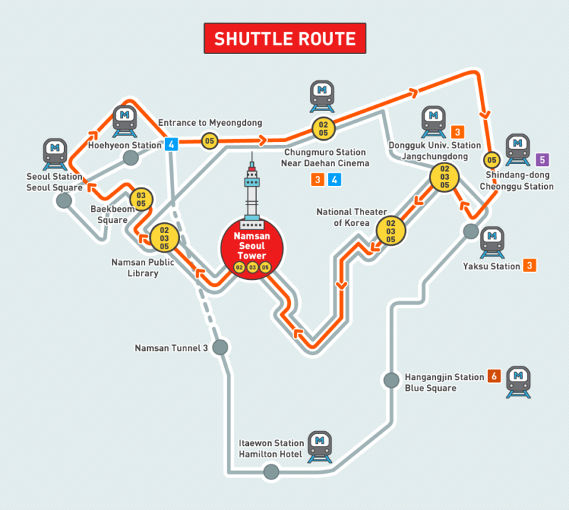
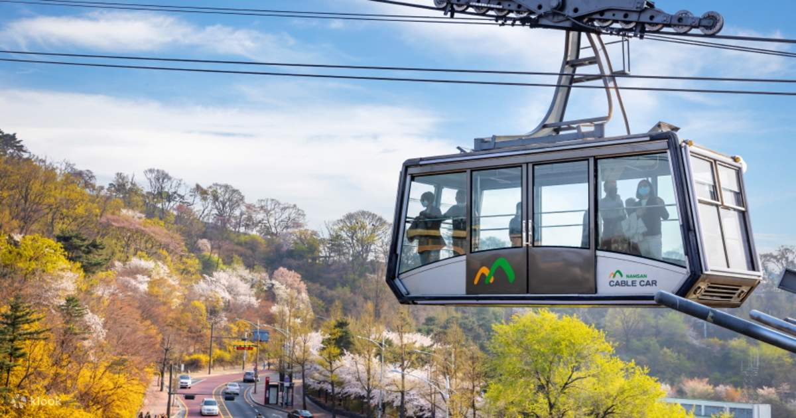
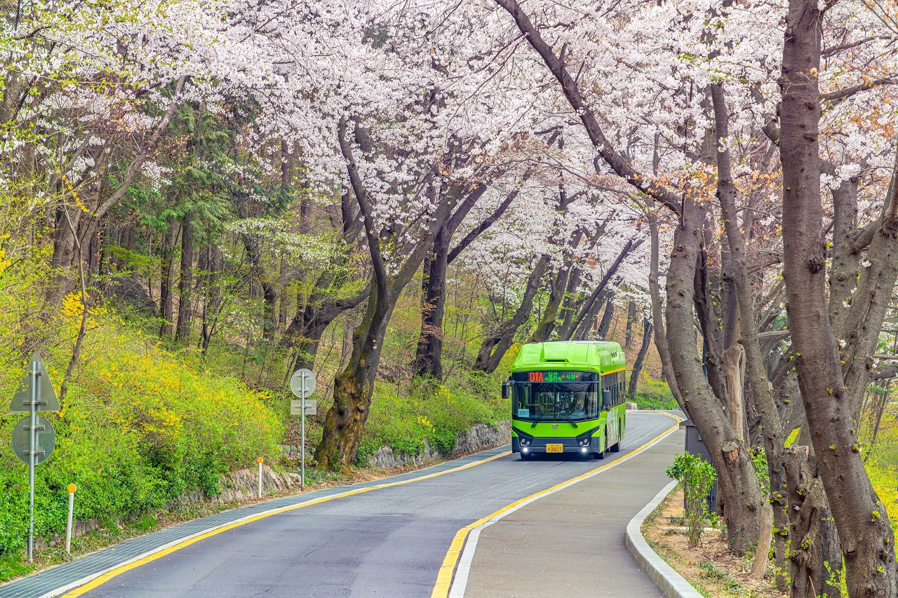
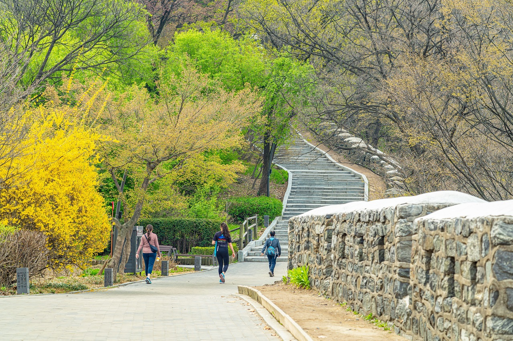

N Seoul Tower is the Eiffel Tower of South Korea. Standing like an elegant queen, N Seoul Tower is an iconic attraction at the top of Mt. Namsan that gives tourists panoramic views of South Korea. Also known as the Namsan Tower or Seoul Tower, N. Seoul Tower is the second highest point in Seoul at 236 meters. The tower was built in 1971 as South Korea’s first general radio wave tower, providing TV and radio broadcast in the capital. Tower elevation ranges from 236.7 m (777 ft) at the base to 479.7 m (1,574 ft) above sea level.
Want to explore the tower? Here’s everything you need to know about it:
How to Get There
There are several ways to reach N. Seoul Tower. Below are the most common options:
Ride the Namsan Shuttle Bus
- Bus No. 02 – Subway: Chungmuro Station (Line 3 & 4), Exit 2 · Departure: Every ~16 minutes (first 7:00 AM, last 11:30 PM)
- Bus No. 03 – Subway: Seoul Station/ Itaewon/ Hangangjin · Departure: Every ~25 minutes
- Bus No. 05 – Subway: Myeong-dong Station Exit 3 · Departure: Every ~15 minutes
Take the Namsan Cable Car
From Myeong-dong Station (Line 4) Exit 3: walk ~15 minutes to the cable car, catch the shuttle, or use the free outdoor escalator.
Book the Seoul City Tour Bus
Choose the Downtown Palace Course — it stops directly at N Seoul Tower. Buses depart every 30 minutes.
Walk / Hike
If you prefer walking, follow the route from Dongguk University Station (Exit 6) toward the National Theater and follow signs to Namsan Park.
N Seoul Tower Opening Hours
Observatory:
- Sunday–Friday: 10:00 AM – 11:00 PM
- Saturday: 10:00 AM – 12:00 AM
(Admission accepted until 30 minutes before closing; viewing schedule may change due to weather.)
Things to Do at N Seoul Tower
N Seoul Tower is more than a viewpoint — it has dining, shops, showrooms, exhibitions, and a rooftop light garden.
Highlights
- Ssentoy Museum & Show Room — toys and figurines
- Hello Kitty Island — a pink indoor exhibition
- Panda Garden — great for photos
- Love Padlocks Area — similar to Paris
- Namsan Octagonal Pavilion — live performances
- Wishing Pond — throw a coin and make a wish
Namsan Park
04628 231 Samil-daero, Jung-gu, Seoul · Observatory: 09:00AM – 11:00PM · Cable Car: 10:00AM – 11:00PM
Namsangol Hanok Village

28, Toegye-ro 34-gil, Jung-gu, Seoul — Open Apr–Oct 09:00–21:00, Nov–Mar 09:00–20:00
Related Posts
- Quirky Museums You Can Visit In South Korea
- Best Free Things To Do In Seoul
- Seasonal Festival Guide to Korea